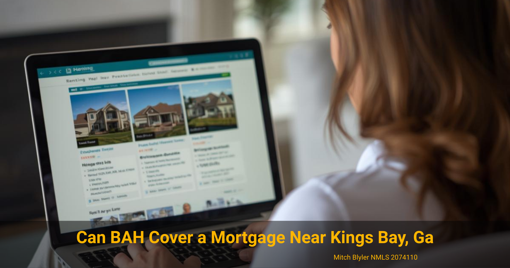

VA Loan Affordability for Military Families
Can BAH Cover a Mortgage Near Kings Bay?
How Basic Allowance for Housing can help service members buy a home near Kings Bay Naval Submarine Base.
VA Loan Affordability for Military Families
How Basic Allowance for Housing can help service members buy a home near Kings Bay Naval Submarine Base.
Many military families stationed at Kings Bay wonder whether their Basic Allowance for Housing (BAH) is enough to cover a mortgage payment when buying a home in Camden County.

For many service members stationed at Kings Bay Naval Submarine Base, Basic Allowance for Housing plays a major role in the decision to rent or buy a home. BAH is designed to offset housing costs in a specific area, and in Camden County it often aligns closely with the cost of owning a home.
With the help of a VA loan, many military families discover that their BAH can cover most—or sometimes all—of a monthly mortgage payment. Understanding how lenders view BAH, local home prices, and typical PCS timelines can help you determine whether buying near Kings Bay makes financial sense.
When you apply for a VA loan, lenders evaluate your total income to determine what mortgage payment fits comfortably within VA guidelines. Basic Allowance for Housing counts as stable income for most active-duty service members, which means it can be included when calculating affordability.
The goal of BAH is to help service members pay for housing near their duty station. Because Camden County housing costs are relatively moderate compared to many other military communities, BAH often goes a long way toward covering a monthly mortgage payment.
However, lenders still evaluate the full financial picture. Even if your BAH amount looks similar to a potential mortgage payment, your debt, credit profile, and overall income all factor into the final approval.
If you are preparing for a move to the area, you may also want to review the local relocation guide for PCS to Kings Bay to better understand housing and relocation timing.
Consider a hypothetical service member stationed at Kings Bay receiving BAH for the Camden County area. Depending on rank and dependency status, that monthly housing allowance may fall close to what many local mortgage payments look like for entry-level homes.
For example, homes in areas like Kingsland, St. Marys, and Woodbine often offer a wide range of price points compared to larger coastal markets. With a VA loan that requires no down payment, many families can purchase a home while keeping their monthly payment within the range of their BAH.
Submariners assigned to Kings Bay commonly spend several years at the installation, which can make homeownership a practical option. Instead of paying rent each month, some families prefer building equity while living in the area.
Additionally, VA loans allow qualified service members to purchase homes with competitive interest rates and limited upfront costs. When combined with BAH, this often creates a path to homeownership that might not exist with other loan programs.
If your orders change later, there are still options. Many military homeowners convert their property to a rental after relocating, especially when moving due to a PCS. You can learn more about that process in this guide on VA loans during a PCS move.
Camden County remains one of the more affordable coastal markets for military families in the Southeast. Communities surrounding Kings Bay Naval Submarine Base—particularly Kingsland, St. Marys, and Woodbine—offer a wide selection of homes ranging from starter properties to larger family homes.
Because of this pricing flexibility, many service members discover that their BAH aligns closely with typical mortgage payments for homes in the area. While exact affordability varies based on interest rates and individual finances, Camden County housing costs are often manageable for active-duty buyers using VA financing.
Homes closer to the base or along the coast may carry higher prices, while neighborhoods slightly inland can offer more space for the same monthly payment. This gives buyers flexibility when deciding what type of home fits their budget and lifestyle.
Families who expect to remain in the area for several years often find that owning a home allows them to stabilize their monthly housing costs while benefiting from potential appreciation over time.
You can explore more about the area in the Camden County area guide, which covers local communities and housing considerations near Kings Bay.
If you are considering buying your first home near Kings Bay, thinking strategically about your BAH can help you make a smarter long-term decision.
First, try to avoid using your entire housing allowance on the mortgage if possible. Leaving some room in your monthly budget can make it easier to handle maintenance costs, insurance changes, or unexpected expenses that come with homeownership.
Second, consider how long you expect to remain stationed at Kings Bay. Submarine assignments often involve predictable tour lengths, which can help families estimate how long they might live in the home before a future PCS.
Finally, work with a lender who understands military relocation patterns and VA loan guidelines. A knowledgeable mortgage professional can help you evaluate whether purchasing now—or waiting until after arrival—makes the most sense for your situation.
Yes. Basic Allowance for Housing is typically counted as stable income when qualifying for a VA loan. Lenders include it alongside base pay and other qualifying income sources when determining affordability.
In many cases, it can cover most or all of the payment depending on the home price, interest rate, and the service member's rank. Camden County housing prices often align closely with local BAH rates, making homeownership achievable for many families stationed at Kings Bay.
Your BAH adjusts to match the housing allowance for your new duty location. If you own a home near Kings Bay and move to another base, some service members choose to rent out the property or sell it depending on their long-term plans.
BAH rates may adjust slightly from year to year. When buying a home, lenders evaluate your full income and financial stability so that small changes in BAH typically do not create financial hardship.
If you're considering buying a home near Kings Bay, a quick conversation can help you understand what your BAH and income may qualify for.
Loan programs, eligibility requirements, interest rates, and closing costs vary based on individual circumstances, credit profile, property type, and market conditions. Every mortgage scenario should be reviewed on a case-by-case basis to determine the most appropriate structure.